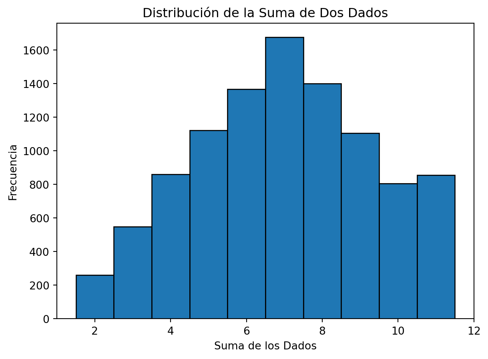
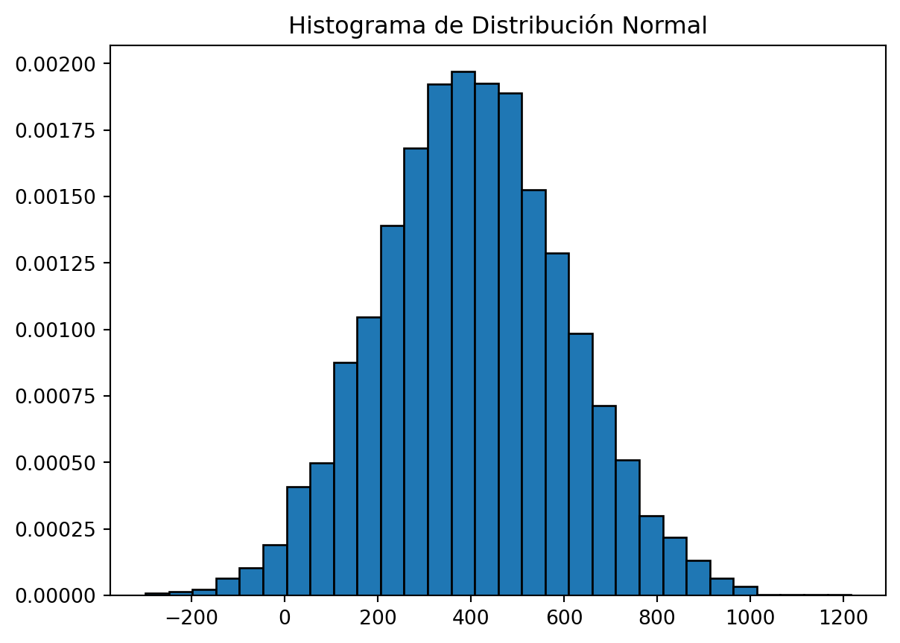

Variables aleatorias, funciones de distribución y estimación de parametros
Resumen
En el fascinante mundo de la estadística y la programación, las variables aleatorias juegan un papel crucial. Como estudiantes que están explorando el poder de Python en el análisis estadístico, es esencial comprender estos conceptos. Las variables aleatorias no solo nos permiten modelar y analizar fenómenos aleatorios del mundo real, sino que también son la base para avanzar en técnicas más complejas de análisis de datos. En esta guía, abordaremos desde lo más básico hasta conceptos más avanzados, siempre con ejemplos prácticos en Python para una mejor comprensión. Así que, ¡prepárense para sumergirse en el mundo de las variables aleatorias y su aplicación en Python!
Variables Aleatorias
Con una variable aleatoria no sabemos con certeza qué valor tomará hasta que se realiza el experimento o se observa el fenómeno. En el idioma inglés es común decir que el valor de la variable se ha realizado cuando una variable aleatoria toma un valor y se convierte en una observación o dato.
Una variable aleatoria puede ser vista como un puente entre el mundo real y el mundo matemático. En términos simples, es una variable que toma valores numéricos determinados por el resultado de un fenómeno aleatorio. A cada uno de estos resultados se lo asocia con una probabilidad como veremos más adelante. A diferencia de una variable determinística, cuyo valor es constante o predecible, una variable aleatoria tiene un grado de incertidumbre.
Pensemos en algunos ejemplos de variable aleatoria en la vida cotidiana:
El número de pichirilos que podemos encontrar cada 20 carros que veamos con una tasa de exito aproximada del 1%.
El número de estudiantes atendidos por la secretaria del departamento de ciencias cada 5 minutos.
La suma de dos dados lanzados.
Los salarios de los trabajadores de una empresa en el mes de diciembre 2024.
Fijate que en estos fenómenos de ejemplo, hemos definido unas condiciones específicas para reproducir los resultados y compararlos entre distintas replicas u observaciones.
Funciones de Distribución
Una función de distribución describe cómo se distribuyen los valores de una variable aleatoria. Es como un mapa que nos muestra la probabilidad de que la variable aleatoria tome un valor específico o caiga dentro de un rango determinado. Esta función es fundamental para entender el comportamiento de variables aleatorias.
Existen varios tipos, cada uno modelando diferentes situaciones. Por ejemplo, la distribución binomial modela escenarios con resultados de ‘éxito’ o ‘fracaso’, mientras que la distribución de Poisson se utiliza para contar eventos en un intervalo fijo de tiempo o espacio.
Volviendo a los ejemplos presentados:
El número de pichirilos que podemos encontrar cada 20 carros que veamos con una tasa de exito aproximada del 1%.
Sigue una distribución binomial con 200 intentos (n) y probaibilidad de éxito del 1% (p) lo que significa que:
a. Los resultados del fenómeno son enteros, es decir que nuestra variable aleatoria es discreta
b. El valor esperado de esta función es:
\[
E(X) = n \times p = 200 \times 0.01 =2
\]
c. Y su varianza es:
\[
V(X) = n \times p \times q = 200 \times 0.01 \times(1-0.01)=1.98 ...
\]
En nuestro caso esperamos encontrar 2 pichirilos cada 200 carros.
Fijate que aquí en el caso de los pichirilos es importante señalar algunas condiciones como por ejemplo el lugar, la hora etc, de la misma manera en el caso de la secretaría es necesario hacernos la pregunta ¿A qué hora del día? ya que en ambos casos hay horas del día en que por hora pico cambian las condiciones lo cual hara difícil que realicemos replicas los resultados y por ende nuestras conclusiones de nuestros experimentos sean inconclusas.
El número de estudiantes atendidos por la secretaría del departamento de ciencias cada hora con una tasa promedio de 2 estudiantes.
Sigue una distribución de Poisson con el parametro \(\lambda = 2\)
a. Los resultados del fenómeno son enteros, es decir que nuestra variable aleatoria es discreta
b. El valor esperado de esta función es:
\[
E(X) = \lambda
\]
c. Y su varianza es:
\[
V(X) = \sqrt{\lambda}
\]
En nuestro caso esperamos encontrar 2 estudiantes por hora. (Valga la redundancia)
Distribución de Probabilidad
La distribución de probabilidad es una descripción matemática de cómo se distribuyen los resultados en un experimento aleatorio. En el caso de nuestra actividad con los dados, cada lanzamiento es un experimento, y la suma de los dados es el resultado cuya distribución estamos interesados en explorar.
Mediante la simulación de 10,000 lanzamientos, hemos creado una muestra considerable que refleja cómo se distribuyen los resultados de la suma de dos dados. Esta distribución nos permite ver cuán frecuente es cada resultado posible (del 2 al 12) en nuestros experimentos.
Para visualizar esta distribución, podemos emplear gráficos como histogramas usando bibliotecas de Python como matplotlib o seaborn. Un histograma mostraría claramente cuáles sumas son más probables (por ejemplo, 7 es el resultado más común en la suma de dos dados) y cuáles son menos comunes (como 2 o 12).
import numpy as npimport pandas as pdimport matplotlib.pyplot as plt# Establecer la seed para reproducibilidadnp.random.seed(0)# Generar 10,000 lanzamientos para cada dadodado1 = np.random.randint(1, 7, 10000)dado2 = np.random.randint(1, 7, 10000)# Crear un DataFrame con los resultadosdf_dados = pd.DataFrame({'Dado1': dado1, 'Dado2': dado2})df_dados['Suma'] = df_dados['Dado1'] + df_dados['Dado2']# Análisis estadístico básicomedia = df_dados['Suma'].mean()mediana = df_dados['Suma'].median()moda = df_dados['Suma'].mode()[0]print(f"Media: {media}, Mediana: {mediana}, Moda: {moda}")# Crear un histograma de la suma de los dadosplt.hist(df_dados['Suma'], bins=range(2, 13), edgecolor='black', align='left')plt.xlabel('Suma de los Dados')plt.ylabel('Frecuencia')plt.title('Distribución de la Suma de Dos Dados')plt.show()
Media: 7.0048, Mediana: 7.0, Moda: 7

Estimaciones de los Momentos a Partir de Réplicas
Uso de Proporciones para Estimar Probabilidades
Una forma poderosa de estimar probabilidades es a través de la proporción de ocurrencias de un evento en nuestras réplicas. En nuestro experimento de 10,000 lanzamientos de dados, cada resultado de la suma (del 2 al 12) tiene una cierta cantidad de ocurrencias. La proporción de cualquier suma específica (por ejemplo, la suma es igual a 7) sobre el total de lanzamientos nos da una estimación de la probabilidad de ese resultado.
Ejemplo con la Simulación de Dados
Si queremos calcular la probabilidad de obtener una suma de 7, contaríamos cuántas veces ocurre esto en nuestros 10,000 lanzamientos y lo dividiríamos por 10,000. Este método nos proporciona una estimación empírica de la probabilidad basada en los datos simulados, la cual puede ser comparada con la probabilidad teórica calculada matemáticamente.
# Podemos hacer en dos pasos:df_grouped = df_dados.groupby("Suma").size().reset_index(name ="Frecuencia")total = df_grouped['Frecuencia'].sum()df_grouped['Porcentaje'] = df_grouped['Frecuencia'] / total *100print(df_grouped)
# O con un condicional:condicion =abs(df_dados['Suma']) ==7prob_dif_2 = np.mean(condicion)prob_dif_2
0.1675
Estimadores y la Ley de los Grandes Números
Qué es un Estimador
Un estimador en estadísticas es una regla o un método para calcular una estimación de una cantidad desconocida basándose en observaciones. En el contexto de nuestra simulación de dados, estamos utilizando un estimador para calcular la probabilidad de un resultado específico de la suma de los dados.
Fórmula de un Estimador de Proporción
El estimador de proporción que estamos utilizando se puede expresar como:
\[ \hat{p} = \frac{\text{número de veces que ocurre el evento}}{\text{total de réplicas}} \]
En esta fórmula, () es nuestra estimación de la probabilidad, y se calcula dividiendo el número de veces que un evento específico ocurre (por ejemplo, obtener una suma de 7) por el número total de lanzamientos (o réplicas) que hemos simulado.
Esta forma de estimar probabilidades está intrínsecamente relacionada con la Ley de los Grandes Números. Esta ley afirma que, a medida que aumenta el número de ensayos en un experimento aleatorio, la media de los resultados observados tiende a acercarse a la media esperada teóricamente. Por lo tanto, con suficientes réplicas, nuestra estimación () se acercará a la probabilidad real del evento.
Introducción a la Distribución Normal
La distribución normal, también conocida como la distribución gaussiana, es una de las distribuciones más importantes en estadística. Se caracteriza por su forma de campana simétrica y es fundamental en muchas áreas de la estadística y la probabilidad. La distribución normal se utiliza para modelar una variedad de fenómenos naturales y sociales, y es esencial en la teoría del muestreo y la inferencia estadística.
Fórmulas y Conceptos Clave
Función de Distribución y Función de Densidad
Vamos a ir explicando los conceptos descritos en conjunto con el código de Python. Primero describamos la función de densidad de la distribución normal la cual está dada por la formula: \[
f(x) = \frac{1}{\sigma \sqrt{2\pi}} e^{-\frac{1}{2} \left(\frac{x - \mu}{\sigma}\right)^2}
\]
donde \(\mu\) es la media y \(\sigma\) es la desviación estándar. Está función de probabilidad entra dentro de la familia de funciones paramétricas siendo estos dos momentos de la distribución los parametros que dan forma a la función de distribución normal.
Media y Varianza
La media \(\mu\) es uno de los momentos de la distribución normal el cual por lo general está ubicado en la mitad de la distribución de valores. Si una variable aleatoria sigue una distribución normal, los valores que “más probables” son aquellos que estén cerca de la media \(\mu\) cuando la varianza \(\sigma^2\) o medida de distribución tiene valores pequeños.
Para estimar la media \(\mu\) empleamos el promedio aritmético:
En econometría, un estimador es una regla o método para calcular una estimación de un parámetro desconocido basado en datos observados. Hay varias propiedades clave que un buen estimador debe tener para ser considerado fiable y útil:
Insesgado o No Sesgado (Unbiasedness): Un estimador se considera insesgado si su valor esperado es igual al parámetro real que se intenta estimar. Esto significa que en promedio, a lo largo de muchas muestras, el estimador acierta el valor verdadero del parámetro.
Eficiencia (Efficiency): Entre varios estimadores insesgados, el más eficiente es aquel con la menor varianza. Esto significa que proporciona la estimación más precisa posible (menos dispersa alrededor del valor verdadero) dada una cierta cantidad de datos.
Consistencia (Consistency): Un estimador es consistente si, a medida que el tamaño de la muestra aumenta, converge en probabilidad hacia el verdadero valor del parámetro que se está estimando. Esto implica que el estimador se vuelve cada vez más preciso a medida que se dispone de más datos.
Suficiencia (Sufficiency): Un estimador es suficiente si utiliza toda la información relevante que los datos aportan sobre el parámetro. Un estimador suficiente resume los datos de tal manera que toda la información sobre el parámetro que se desea estimar está contenida en el estimador.
Robustez (Robustness): Un estimador robusto mantiene sus propiedades (como ser insesgado y consistente) incluso cuando se violan algunas de las suposiciones en las que se basa el modelo. Esto es importante en la práctica, ya que los datos reales a menudo no cumplen con todas las suposiciones teóricas del modelo.
Normalidad Asintótica (Asymptotic Normality): En el caso de estimadores consistentes, se desea que, a medida que el tamaño de la muestra aumenta, la distribución del estimador se aproxime a una distribución normal. Esto facilita la realización de inferencias estadísticas, como pruebas de hipótesis y la construcción de intervalos de confianza.
Estas propiedades son ideales y, en la práctica, puede ser difícil encontrar un estimador que cumpla con todas ellas en una situación dada. Por lo tanto, los econometristas a menudo tienen que hacer compromisos basados en el contexto específico y las limitaciones de los datos disponibles.
Mediana y Rango Intercuartílico
Un inconceniente del trabajo con variables aleatorias es que no siempre el mundo es color de rosa como en la distribución normal. Usualmente nos encontramos con presencia de valores atípicos los cuales tienen un impacto significativo en las estimaciones de \(\mu\) y \(\sigma^2\).
En ese sentido existen métricas que nos dan mejor idea de lo que sucede dentro de nuestra variable estos son:
La mediana la cual es el valor bajo el cual se encuentra el 50% de la población. Por ejemplo si analizamos el salario básico unificado, más de la mitad de la población del Ecuador tiene un salario menor a 600 dólares lo cual nos indicaría que la mediana está cerca de ese valor. Otro nombre para la mediana es percentil 50.
Continuando con los percentiles, como se mencionó la varianza es suceptible a valores que están muy lejos de la media. Por ende un mejor indicador de la dispersión de los datos es la diferencia entre el percentil 75 y el percentil 25 el cual se conoce como rango intercuartilico. Este valor indica entre que valores se encuenta el 50% de la población con valores más frecuentes.
Construcción de un gráfico con los momentos de una distribución
Histograma de 10,000 Números Aleatorios
Primero, generamos una muestra de 10,000 números con una distribución normal usando numpy y la visualizamos en un histograma.
import matplotlib.pyplot as pltimport numpy as npfrom scipy.stats import normdata = np.random.normal(400, 200, 10000)plt.hist(data, bins=30, edgecolor='black', density=True)plt.title('Histograma de Distribución Normal')
Text(0.5, 1.0, 'Histograma de Distribución Normal')

Añadir la Línea de la Función de Densidad Sobreponemos la curva de la función de densidad normal utilizando los valores de media y desviación estándar.
Desviación Estándar y Rango Intercuartílico Finalmente, representamos la desviación estándar con lineas purpura y el rango intercuartílico como una sombra gris en el gráfico.